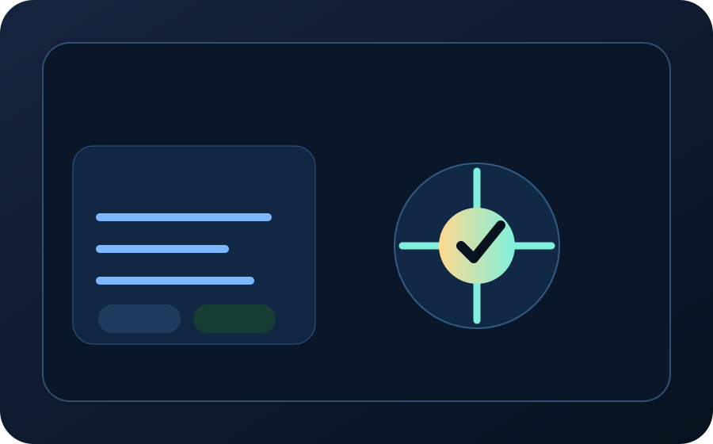

Entry offer
Start with an AI Readiness Assessment
Identify where AI can create measurable value, what data and cloud foundations are missing, what governance controls are required, and which pilot can be delivered safely in 45 days.

What we assess
Business value
Use-case priority, measurable outcome, ROI signal, and adoption risk.
Use-case priority, measurable outcome, ROI signal, and adoption risk.
Technical readiness
Data, cloud, security, integration, DevOps, observability, and cost foundations.
Data, cloud, security, integration, DevOps, observability, and cost foundations.
Governance readiness
Responsible AI, prompt security, human approval, audit trail, and model risk controls.
Responsible AI, prompt security, human approval, audit trail, and model risk controls.

Output
A prioritized AI opportunity scorecard, secure architecture direction, governance control list, pilot recommendation, and 45-day execution roadmap.
Email DigiScience